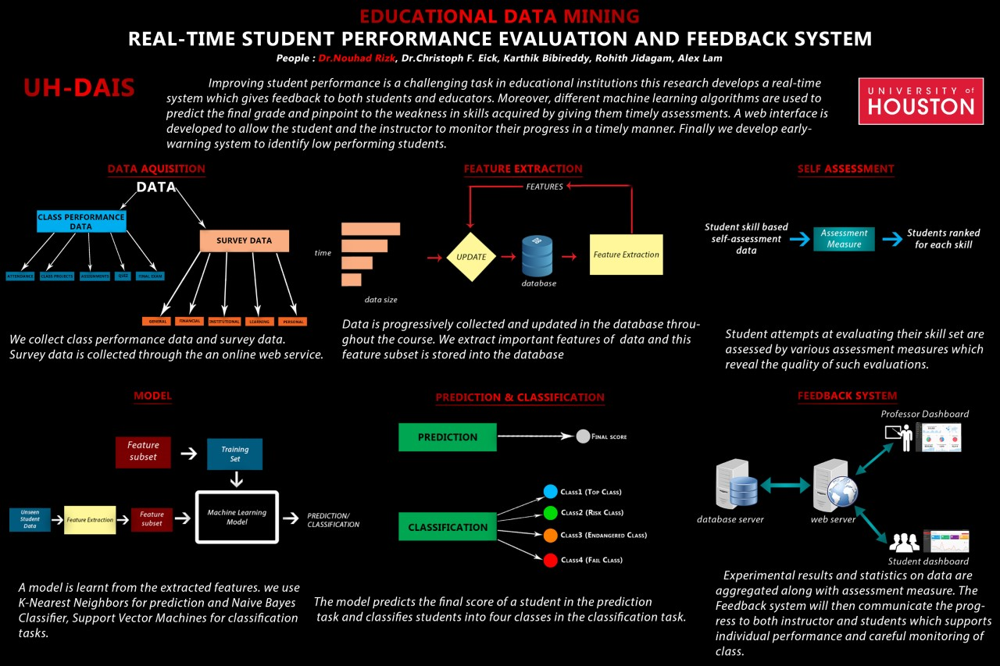
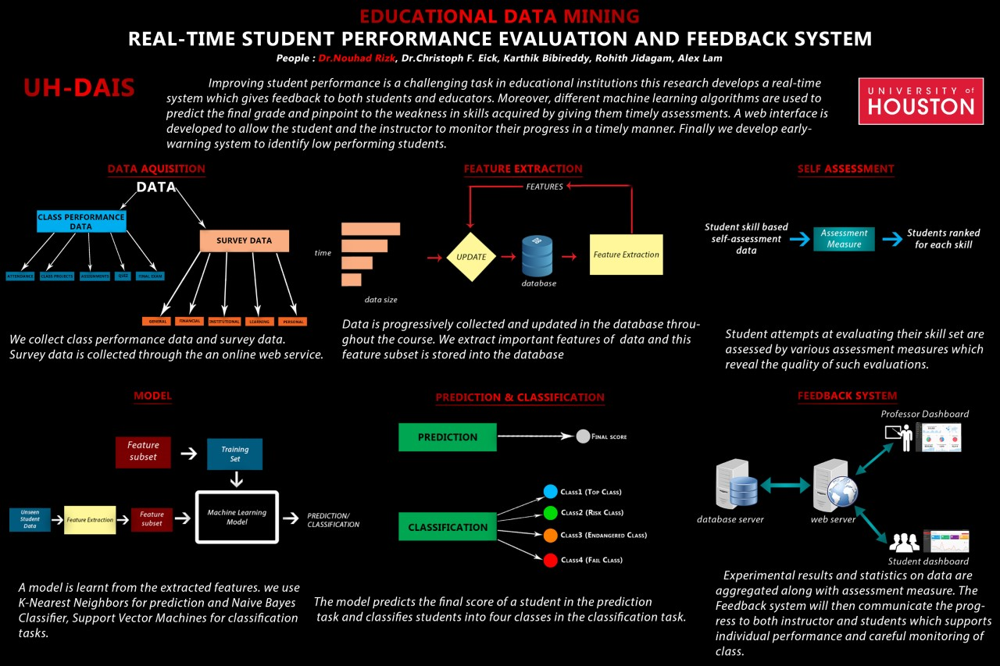
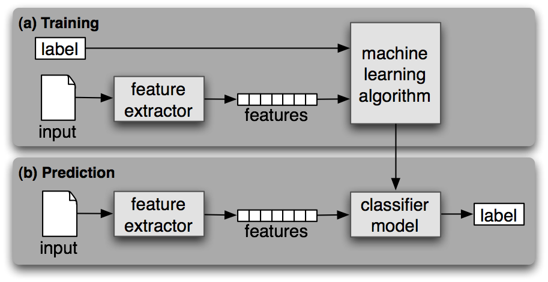
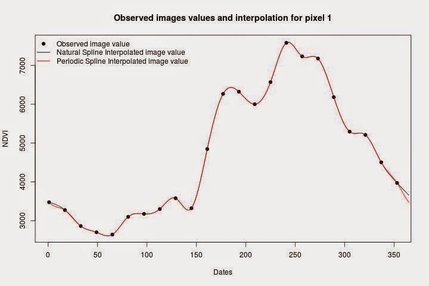
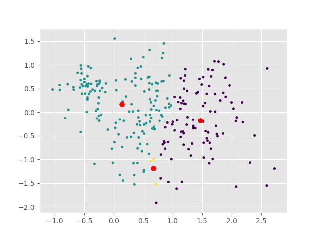
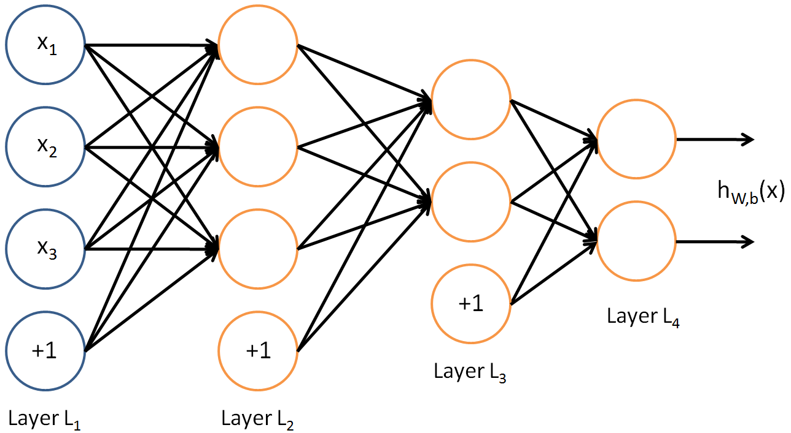
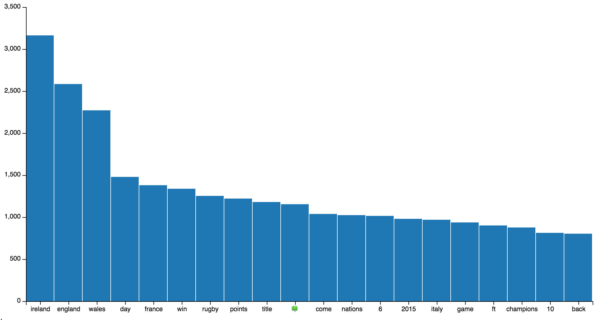
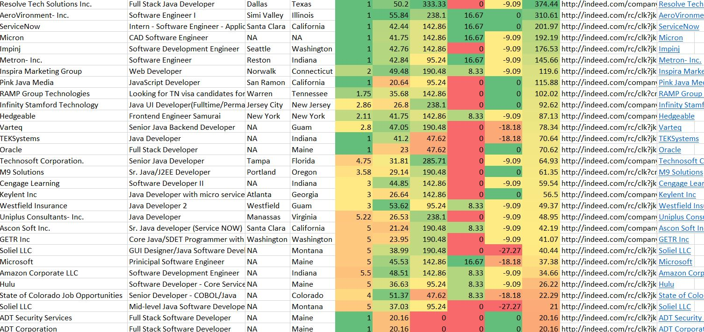

Professional Summary
Knowledgeable & experienced Software Engineer / Data Scientist with hands-on experience in all levels of development including data ingestion, ETL operations, data mining, machine learning, software development, performance, UX, and unit testing. Collaborative and enthusiastic team player dedicated to efficiently resolving project issues.
Skill-Set
Software Engineering
Frameworks
Data Science
Libraries
Work Experience
Research Assistant, (11/2015 – 05/2017) (1yr 7mos)
Data Analysis & Intelligent Systems Lab, University of Houston – Houston
- We have designed and implemented the real-time student performance evaluation and feedback system (RSPEF).
- Developed the front end of the application such as forms and interfaces using HTML5, CSS3, CSS and AgularJS.
- Worked with ER models, Relational Schemas to represent student and course information.
- Worked with SQL Server 2008 databases in writing PL-SQL stored procedures, triggers, views, and cursors.
- Worked with numpy and pandas libraries in python 3.4 and performed ETL operations to prepare data.
- Used Weka, R and Matlab to plot data, analyze and identify correlated features in the data.
- Developed API’s for Bayesian, Logistic Regression, Multi-Layer Neural Network and Random Forest Classifiers in JAVA.
- Developed a toolkit in JAVA to sequentially conduct and evaluate experiments using Weka and JDBC API.
- Built a logistic regression model to predict student grade points and determine poor performing students, early in the course.
- Developed responsive dashboards to display predictions and other statistical findings using HTML5, AngularJS, JavaScript and D3.
.NET Application Developer (Research Assistant), (04/2016 – 08/2016) (5mos)
Undergraduate Student Success Center, University of Houston - Houston
- Involved in designing database schema for exam scheduling system and developed the tables with relations.
- Worked on stored procedures, triggers for Web API services.
- Involved in designing and developing UI using HTML5, JavaScript and CSS.
- Developed user authentication module using ADSI and ADO.NET.
- Used TELREK to compile and decompile production code.
- Involved in deployment of application using IIS server and fixed the issues that came across while integration.
- Participated in code reviews and helped in testing using NUNIT.
- Deployed scalable, highly available and modular software products and web applications such as Exam Scheduling System, Billing & Invoice System and maintained associated databases.
- Collaborated with developers and performance engineers to enhance supportability and identify performance bottlenecks.
Graduate Teaching Assistant, (09/2016 – 05/2017) (9mos)
Computer Science Department, University of Houston – Houston
- Worked as a graduate teaching assistant for the undergraduate level course, Introduction to Compute Science II, Java programming, and OOP's concepts.
- Helped with ongoing development and design of the curriculum in a manner supporting a interactive and scholarly approach to student learning.
- Apply departmental process related to peer advising and mentoring and provided support to faculty research projects.
- Helping the instructor conduct the course in a smooth manner and proctored 8 exams and 26 medium sized tests for two semesters.
- Participate in assessment process using a variety of methods and techniques and provided effective, timely and appropriate feedback to students.
Total Experience : 2 Years
Portfolio
![Designed and implemented the real-time student performance evaluation and feedback system (RSPEF) to improve graduation rates at our university. RSPEF is an interactive, web-based system consisting of a Predictive Analysis System (PAS) that uses machine learning techniques to interpolate past student-performance into future, and the development of an Emergency Warning System (EWS) that identifies poor-performing students in courses. A unified representation of student-background and student-performance data is provided in form of a relational database schema that is suitable to be used to assess student’s performance across multiple courses. The system design includes core machine learning & data analysis engine, a relational database that is reusable across courses and an interactive web-based interface to continuously collect data and render data visualizations on to dashboards for users. This system can predict a student’s grade and identify poor performing students in very early stages of a course.](images/proj1.jpg){kind=link}
Designed and implemented the real-time student performance evaluation and feedback system (RSPEF) to improve graduation rates at our university. RSPEF is an interactive, web-based system consisting of a Predictive Analysis System (PAS) that uses machine learning techniques to interpolate past student-performance into future, and the development of an Emergency Warning System (EWS) that identifies poor-performing students in courses. A unified representation of student-background and student-performance data is provided in form of a relational database schema that is suitable to be used to assess student’s performance across multiple courses. The system design includes core machine learning & data analysis engine, a relational database that is reusable across courses and an interactive web-based interface to continuously collect data and render data visualizations on to dashboards for users. This system can predict a student’s grade and identify poor performing students in very early stages of a course.
Determining the gender of the author of a paper, publication, letter or blog text can be very useful in criminal forensics, determining plagiarism, linguistic studies, pattern recognition etc. In this project, we develop a machine learning model trained from blog text examples using WEKA API to predict the gender of the author of a given text with a certain accuracy.In this project we had written code in java and stored datasets in an SQL database.
Time series data requires interpolation or has missing values when observations occur at wrong frequencies or noise interferes with data or may be the data is too granular or not.There are a large variety of ways to interpolate time series data, In our project, we fit a polynomial curve on our current data using the polyfit function from numPy library and then calculate the cost function for each instance in the dataset. We are required to learn only one parameter which is the degree or the polynomial.
In this project we have acquired a sample car data set from UCI Dataset libraries and have built custom K-MEANS and Fuzzy K-MEANS clustering algorithms to cluster similar cars. The Fuzzy K-MEANS is also known as soft K-MEANS algorithm, which may allow clusters to overlap which means a point might belong to both cluster with a certain participation towards each cluster.
In this project, we had built a 3-layered neural network which can be easily scaled to N - layers. We have not used any builtin libraries like scikit-learn or WEKA. The code is written in Python 3.4 and numPy is the only library used in developing this NN. The NN uses back propagation to learn weights.
Registered an application with twitter's REST API, using python with the help of libraries like tweepy and NLTK we connect to the API and request the latest tweets with a certain key word given by the user. The tweets are collected in real time and most common words are counted. A hash map is generated and later converted into JSON format. Using Vincent.js libraries we plot a histogram with frequencies against tending words.
Developed a Python toolkit to scrape Indeed.com using user recommended job title and location. Live job posts up to 4 days are scraped. The job description is compared with user's resume using nltk, and a similarity score is generated. Also, skills and experience are identified from the job description and a score is computed. Other scores such as turn-on and turn-off score are computed based on user requirements. A list is prepared in CSV format with all scraped job posts, titles, asking experience, respective scores and a link to apply.
Education
Master's Degree in Computer Science (AUG 2015 - MAY 2017)
University of Houston - Main Campus, Houston TX
- 3.25 GPA (30 credit hours including 6 research hours).
- Coursework in DBMS, Machine Learning, Artificial Intelligence, Computer Vision, Visualization & Cloud Computing.
- The game Wanted developed as a part of coursework in Game Development, Qualified for Microsoft Imagine Cup 2016
Bachelors's Degree in Computer Science (AUG 2011 - MAY 2015)
SRM University - Main Campus, Chennai TN INDIA
- 8.0 CGPA.
- Computational Science and Engineering Coursework in Data Structures, Operating Systems, Theory of Computation, Microprocessor, Algorithms, Compiler Design, Computer Networks, Artificial Intelligence, DBMS, Linux, Mobile Computing, Software Engineering, Data Mining & Internet Security.